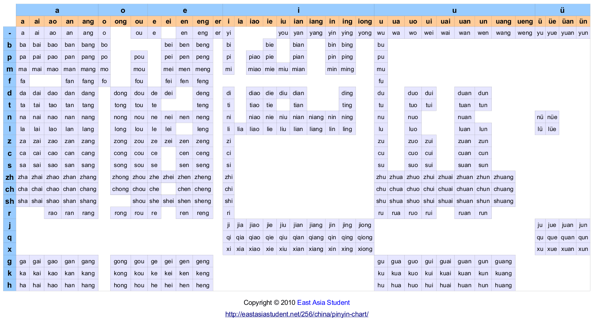

Pinyin keyboard:
- b p m f d t n l z c s zh ch sh r j q x g k h 22
a o e i u ü 6
- a ai an ang ao e en eng i n ng o ong u r 16 (either redundant list of finals)
n ng r 3 (or just finals that aren’t also middle)
1 2 3 4 5 - (- would mean don’t know, don’t care about tone)
note “i” column in table below should perhaps be split to account for the two sounds: bi vs. zhi
or just omit 2nd sound, as it’s redundant: z, c, s, zh, ch, sh, r don’t need the final i
all pinyin syllables are terminated with a tone, which removes ambiguities like xian, zhan, liao
The purpose of this keyboard would be to write pinyin in the minimum amount of taps
Would be interesting to do same / matching with a zhuyin keyboard:
zhuyin order:
bpmf dtnl gkh jqx zh ch sh r zcs
ㄅㄆㄇㄈ ㄉㄊㄋㄌ ㄍㄎㄏ ㄐㄑㄒ ㄓ ㄔ ㄕ ㄖ ㄗㄘㄙ
ㄚㄛㄜㄝ ㄞ ㄟ ㄠ ㄡ ㄢ ㄣ ㄤ ㄥ ㄦ ㄧ ㄨ ㄩ
a o e ê ai ei ao ou an en ang eng er yi,-i wu,-u yu,-ü
pinyin order:
bpmf dtnl zcs zh ch sh r jqx gkh
ㄅㄆㄇㄈ ㄉㄊㄋㄌ ㄗㄘㄙ ㄓ ㄔ ㄕ ㄖ ㄐㄑㄒ ㄍㄎㄏ
ㄚㄛㄜㄝ ㄞ ㄟ ㄠ ㄡ ㄢ ㄣ ㄤ ㄥ ㄦ ㄧ ㄨ ㄩ
a o e ê ai ei ao ou an en ang eng er yi,-i wu,-u yu,-ü
based on a breakdown of these pinyin tables:
east asia student pinyin chart
https://eastasiastudent.net/china/mandarin/pinyin-chart/

which is about the same as Wikipedia's, with initials on top, finals on the side, instead of the reverse:
https://en.wikipedia.org/wiki/Pinyin_table#Overall_table
 compare Zhuyin:
https://en.wikipedia.org/wiki/Zhuyin_table
compare Zhuyin:
https://en.wikipedia.org/wiki/Zhuyin_table